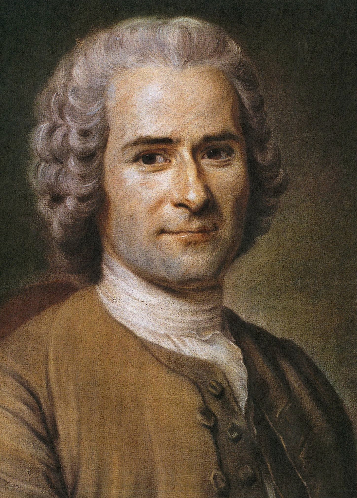

Back in the prehistoric-era, humans all around the world had complete anarchy. There were no social classes and no political institutions. Long before anarchism emerged as a distinct perspective, humans lived for thousands of years in self-governing societies without a special ruling or political class.
Taoism, which was developed in ancient China, has been linked to anarchism. Lao Tzu, a famous taoist sage’s philosophy was based on an "anti-polity" stance and the rejection of any kind of involvement in political movements or organisations, developed a philosophy of "non-rule" in the Tao Te Ching.
The famous greek philosopher Socrates also expressed some of his views about anarchism. He constantly questioned authority and at the centre of his philosophy stood every man's right to freedom of consciousness. Aristippus, a pupil of Socrates and founder of the Hedonistic school, claimed that he did not wish either to rule or be ruled. He saw the State as a danger to personal autonomy

Modern Anarchism sprang from the humanistic thought of enlightenment. Scientific discoveries that preceded Enlightenment made thinkers of the time think that humans were able reason for themselves. Their ideology was that when nature was tamed through science, society could be set free. Works from Jean Meslier and Baron d'Holbach, whose materialistic worldview would later resonate with anarchists. Works from Jean-Jacques Rousseau had a strong impact with anarchism in many ways, he affirmed that goodness nature of humans and viewed the sate as fundementaly oppresisive.
The French Revolution marked as major landmark of the history of anarchism. The use of the revolutionary masses of violence to achieve political ends have inspired anarchists of later centuries . Such as the Women’s march on Versaille, the Storming of the Bastille and Révellion riots were seen as revolutionary. Anarchists would identify themselves as Enragés ("enraged ones") who expressed their demands to the commoners that opposed the revolution as a contradiction in terms. The French Revolution was depicted in the subconscious of anarchists that rebels who seized power, would become the new tyrants. This was clearly expressed by the state-orchestrated violence of the Reign of Terror. The proto-anarchist groups were ultimately executed by the guillotine.
In the last decades of the 19th and the first of the 20th century. Anarchy played a prominent role in the working class struggles, along with Marxism. Mass migration, modernism, railroads and the access to printing all aided in the anarchist and their movement.
The most regarded as the founder of modern anarchism was the French political writer Pierre-Joseph Proudhon. His theory "Mutualism" argued that real laws of society have nothing to do with authorities but rather from the nature of society. His work “What is property” in 1840 definined anarchism as an anti-capitalist and anti-state.In his book, he shows how exploitation happened in production. The worker “has sold and surrendered his liberty” to the boss who appropriates their “collective force.” He called for abolishing property, saying that the right to a product is exclusive. In addition, he advocated for an industrial democracy and that exploitation was the due to the difference between labour and labour-power.
Mutualists played an important role in the First International. However, as anarcho-communism was gaining pace, the mutualist influence dimished in Europe. Instead, Mutualism found its way to the United States of America in the late 19th century.
This was the only time in history where anarchism was about to become a reality. It was based on the strong anarchist movement in Spain that dated back to the 19th century. Anarchism in Spain was leaning towards syndicalism which started the formation of the Confederación Nacional delTrabajo (CNT) in 1910. Their goal was to be a liberttarian communist society and to organize strikes all around Spain. In 1936, the Popular Frontwhich was dominated by left wingers won the elections. Months later the former ruling class attempted a coup which caused the Spanish Civil War. To respond to the army’s rebellion, an anarchist inspired revolution of peasants and workers with the support of the armed militia, took control of the large rural areas and urban areas where they collectivised land. In Barcelona, chaos ensued. Workers would break bourgeois habits and genderhierarchies. A newly formed Anarchist Group, Mujeres Libres (MMLL) (Free Women) had a major role in the transformation of social norms. Working conditions in Spain increased drastically and the economy was collectivised. However during the course of the Spanish Revolution, anarchists were losing ground against the Stalinists. The Stalinists controlled the distribution of military aid to the Republicans from the Soviet Union. The Spanish Revolution was put to an end 1939, which marked the end of the libertarian traditions in Spain and around the world of organisation forms of anarchists thought.
Ideas of minimal governments were popular in the United States ever since the 18th century, particularly on the east coast. Anarchists wereinfluenced by Pierre-Joseph Proudhon and did not criticize capitalism. Anarchism developed towards individualism and transcendentalism. The most important figure of American Anarchism was Henry David Thoreau. He was skeptical towards the government with his work Civil Disobedience in which he declared that "That government is best which governs least". In Chicago there were some anarcho-christianism and socialist pockets. After the bloody protests in Chicago in 1886, anarchism was known nationwide but it's quickly started to decline as it was associated with terrorist violence.